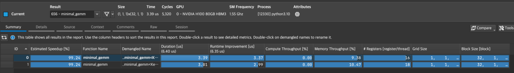

flowchart TD
Shape["输入 GEMM 形状 (M, N, K)"] --> Heuristic["启发式规则 / 预调优表格"]
Heuristic --> Config["选定最优 Tile 尺寸与多级流水级数"]
Config --> Dispatch["C++ 模板特化 Kernel Dispatch"]
Dispatch --> Run["GPU 高性能并发执行"]
第 8 课：Kernel 组合、Dispatch 与 Profiling
参考答案版：包含完整代码实现与问答题深度参考解析。建议先独立完成练习题后再展开核对。
本课目标与完成标准
学完后你应能：为 shape/dtype/SM 选择候选 kernel，用正确 benchmark 方法而非单次计时做决策。
通过必须同时满足：
- 独立补齐本课唯一的代码填空题，并通过给定检查；
- 三个问答题均说明因果链，而不是只报术语；
- 能指出至少一个正确性边界和一个性能取舍；
- 总分不低于 8/10，且没有一票否决级概念错误。
前置关系
- 课程前置：CUDA 线程模型、GEMM、C++ 模板基础
- 本课在路线中的作用：生产 CUTLASS 集成通常由多个 kernel specialization 与 dispatch 组成；不存在对所有 shape 都最佳的单一 tile。
核心心智模型
核心操作与执行流程图解

图 8-1：Nsight Compute (NCU) 算子性能分析概览界面
图 8-2：CUTLASS Kernel 动态配置选型与分发调度流程
1. 它是什么，解决什么问题
Kernel 组合、自适应分发与性能剖析（Kernel Specialization, Dispatch & Profiling） 是将 CUTLASS 高性能模板库工程化落地到生产级推理引擎（如 TensorRT-LLM、vLLM）中的“最后一公里”。
“不存在放之四海皆准的单一最优 Tile”（结合图 8-1 与图 8-2）： - 形状多样性带来的性能撕裂： - 在大模型训练与 Prefill 阶段，\(M, N, K\) 均为数千的大矩阵，大分块（如 \(256 \times 128 \times 64\)）配合 4 阶段流水能打满全部 SM； - 但在 LLM 生成解码阶段（Decode GEMV），Token 数 \(M = 1\)！若依然沿用 \(M_{\text{tile}} = 256\) 的大配置，整个矩阵在 \(M\) 维度切分后全局仅产生 1 个 ThreadBlock，导致 H100 上的其余 131 个 SM 全部闲置看戏，硬件利用率不足 1%！ - 分发中枢（Dispatch Engine，图 8-2）：必须根据运行时动态传入的张量尺寸 \((M, N, K)\)、数据类型（FP16/BF16/FP8）与硬件架构（SM80/SM90），通过预先调优的启发式分桶表格（Shape Bucketing），动态路由（Dispatch）到最匹配的模板特化实例； - NCU 深度剖析（图 8-1）：利用 Nsight Compute 的硬件性能计数器，精准定位算子是处于 Memory-Bound、Compute-Bound 还是被发射延迟阻塞，建立科学的调优基线。
2. 它如何工作（结合图 8-1 与图 8-2）
生产级算子选型与分发流水线包含四个严密的阶段： 1. 硬约束静态过滤（Constraint Filtering）： - 检查硬件架构计算能力（如 FP8 仅在 SM90+ Hopper 架构上激活）； - 检查基准显存指针地址是否满足 16 字节物理对齐（决定是否可开启 128-bit 向量化加载）； - 检查收缩维度 \(K\) 是否满足 MMA Atom 的整除性约束。 2. 启发式分桶路由（Shape Bucketing Dispatch，图 8-2）： - 建立几何分桶表：将高度动态的连续输入维度离散化映射到不同的工作模式： - \(M = 1\)（Decode 阶段）：路由至 Split-K 或小 \(M_{\text{tile}}\) 高度展开的 GEMV 特化 Kernel； - \(1 < M \le 16\)：路由至小 Tile、深流水线的低延迟 Kernel； - \(M > 64\)（Prefill / Training 阶段）：路由至大 Tile、高吞吐的满载 GEMM Kernel。 3. 工作区分配与异步启动（Workspace Allocation & Launch）： - 为选定的特化 Kernel 准备运行时参数结构体与 Shared Memory / Split-K 临时中间张量工作区（Workspace）； - 将参数下发到指定的 CUDA Stream 中异步发射。 4. 性能基准评测闭环（Profiling Feedback Loop，图 8-1）： - 在生产上线前通过离线 Autotuning 脚本遍历参数网格，利用 NCU 提取 Roofline 利用率，反向填充最优分发决策表。
3. 正确性条件与常见误区
- “单次运行计时”的致命基准偏差：
- 致命误区：在循环外打两个 CUDA Event 仅测单次耗时便选定最优 Kernel；
- 底层硬件现实：首次运行包含 GPU 驱动冷启动、时钟频率爬坡（P-State 提频延迟）、编译期 JIT 链接与 L2 Cache 冷加载；单次测量结果极度失真，根本不具备统计置信度；
- 浮点数值参考对验的缺失（Silent Bug Hazard）：
- 速度最快的候选 Kernel 很可能存在边界掩码未生效、收缩尾块未清零的致命 Bug！测试框架必须先将候选 Kernel 的输出与 FP32 纯精度 CPU 参考实现按严格公差（
rtol/atol）对验通过，才能将其纳入候选池。
- 速度最快的候选 Kernel 很可能存在边界掩码未生效、收缩尾块未清零的致命 Bug！测试框架必须先将候选 Kernel 的输出与 FP32 纯精度 CPU 参考实现按严格公差（
4. 性能与工程取舍（精确匹配 vs. 几何分桶）
- 精确形状表（Exact Shape Table）：
- 优点：对固定的特定尺寸（如 \(4096 \times 4096 \times 4096\)）能挖掘出最后 1%~2% 的极限算力；
- 缺点：在 LLM 推理场景中，Batch 和上下文长度实时剧烈变动。若为每个出现的具体尺寸都编译一个特化 Kernel，会导致二进制库体积暴涨数 GB，编译耗时数小时，且未见过的尺寸直接命中降级冷路径；
- 几何分桶表（Geometric Shape Bucketing）：
- 优点：仅保留少数几个典型分界点（如 \(M \in [1], [2, 16], [17, 64], [65, \infty)\)），编译产物紧凑可控，覆盖全部动态场景；
- 缺点：在某些非典型边界尺寸上，可能比极限专用定制落后 3%~5% 的峰值吞吐，是现代工业级系统平衡维护代价与极致性能的黄金解。
具体演示：Roofline 理论极限执行时间测算
考虑输入矩阵乘法计算量 \(\text{FLOPs} = 2 \times 10^{11} \text{ 次}\)，数据读写最低显存搬运量 \(\text{Bytes} = 10^{10} \text{ 字节}\)： - 设目标 GPU 的 Tensor Core 理论算力峰值 \(P_{\text{peak}} = 100 \text{ TFLOPS} = 10^{14} \text{ FLOP/s}\)； - 显存物理带宽 \(BW = 2 \text{ TB/s} = 2 \times 10^{12} \text{ Byte/s}\)； - 计算时间下界： \[T_{\text{compute}} = \frac{2 \times 10^{11}}{10^{14}} = 0.002 \text{ 秒} = 2.0 \text{ ms}\] - 访存时间下界： \[T_{\text{memory}} = \frac{10^{10}}{2 \times 10^{12}} = 0.005 \text{ 秒} = 5.0 \text{ ms}\] - Roofline 理想执行时间： \[T_{\text{roofline}} = \max(T_{\text{compute}}, T_{\text{memory}}) = \max(2.0, 5.0) = 5.0 \text{ ms}\] - 调优指导：该算子受限于显存带宽（Memory-Bound）。若 profiling 实测为 8 ms，优化空间在访存流水和 L2 命中率；若优化 Tensor Core 发射，即使算力利用率由 50% 提升到 100%，耗时绝不可能低于 5.0 ms 的物理显存红线。
实践任务：唯一代码填空题
补齐受带宽和计算双重上限约束的 roofline 时间。
规则：只能修改 TODO/______ 所在位置；不要删除断言或放宽误差。代码注释说明了每个边界条件。
Code
def roofline_seconds(flops, bytes_moved, peak_flops, bandwidth):
"""理想时间取计算时间与内存时间的较大者。"""
# TODO：只补齐下面这个表达式。
return ______
assert roofline_seconds(100,200,100,100) == 2
assert roofline_seconds(200,100,100,100) == 2检查方法
运行本单元格；所有 assert 必须通过。另手工构造一个边界输入，解释预期结果。
提交时请给出：补齐后的代码、实际运行输出（环境不可用时注明“仅静态审查”）以及对失败用例的解释。
Q1
不要背定义：请从输入、状态变化和输出三个阶段解释“Kernel 组合、Dispatch 与 Profiling”的工作机制。
你的答案：
Q2
只用 CUDA Event 测一次就选择 kernel，遗漏了哪些噪声与正确性风险？
你的答案：
Q3
dispatch 表应该按精确 shape 还是 shape bucket？说明维护与性能取舍。
你的答案：
评分与通过规则
- 代码 4 分：正常输入 2 分，边界输入 1 分，解释实现 1 分；
- Q1～Q3 各 2 分；
- 一票否决：结果碰巧正确但核心因果链错误、删除边界检查、把未运行结果说成实测。
需要提示时按四级机制请求：概念区域 → 具体方向 → 关键局部 → 完整答案。